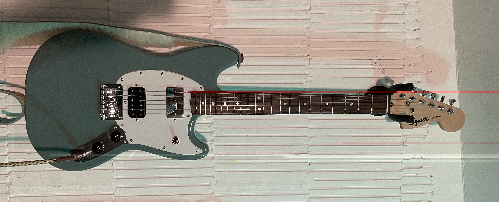

Shortly after releasing my album (Bandcamp, Spotify) I decided to retire my Jag-Stang as my main guitar. The guitar that served me so well, on which many of the songs on the album were written and perfected, would still hang around to play and look nice, but I wanted to take my playing and writing in a new direction and an easy way to explore and discover new music is to start using a new guitar.
I'd always wanted a Mustang but couldn't afford one, so when I discovered the Bullet Mustang guitars by Squier, buying one was almost inevitable. The biggest compromise compared to an original Fender Mustang is the bridge - instead of a Dynamic Vibrato system, it has a hard tail bridge. It also improves on the Mustang design with a 3-way toggle switch, a mod which I had on my Jag-Stang (honestly, I hate the Mustang switching). I'm very happy with my new guitar, in fact the Sonic Gray model that I bought has already replaced the Jag-Stang as my main guitar when practising.
But my fascination with offset guitars didn't end there. Harley Benton also have a dirt cheap amalgamation of Mustang and Jaguar guitars - The MS-60 is basically a Mustang shaped guitar with a Jaguar/Jazzmaster vibrato system. I have very little experience with this vibrato system, so to satisfy my curiosity I went to a music shop and tried a bunch of Jaguars and Jazzmasters out. I found that I liked it a lot: like the Mustang vibrato system, it adds to the tone of the guitar (I should say that it alters the sound of the guitar, whether it adds or takes something away depends on how much you like the difference).
But I also liked the exaggerated body shape too. The one thing I don't like about my new Mustang is the shape - it feels a little too pedestrian. After gigging with a Mustang for ages, Kurt Cobain's Jag-Stang design took that guitar and adjusted the shape to be more Jaguar like. Did he feel the same way, I wonder?
I had been down some rabbit holes on the https://offsetguitars.com forum looking for Jag-Stangs with improved shapes, and I was even considering commisioning someone to cut a custom shape for me to work with (yes, I was considering a DIY custom guitar), but I think the Jazzmaster shape does what I need, so I can nip that tangent in the bud.
And I think the Jazzmaster is my preferred guitar, not the Jaguar; that 3 way toggle is far more useful to me than the 3 individual switches of the Jaguar, and that alone would almost be a deal breaker, but upon reflection, I think the longer scale length also has its advantages, namely a selection of compatible necks.
Speaking of which, I'm diving into guitar necks too as a tangential topic. I've been asking myself what MY favourite necks are, do they share common features? What finishes, shapes and sizes fo I prefer? That's a topic for the future, I think.
Any, back to Jazzmasters - I'm not saying I will 100% buy one now, nor that I will buy the MS-60 now that I know I like the Vibrato System. I'm just saying that through that entry point, I've been on a journey of discovering what it is about guitars that I, personally, like.
Until next time.